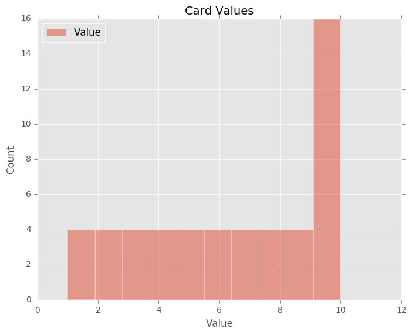
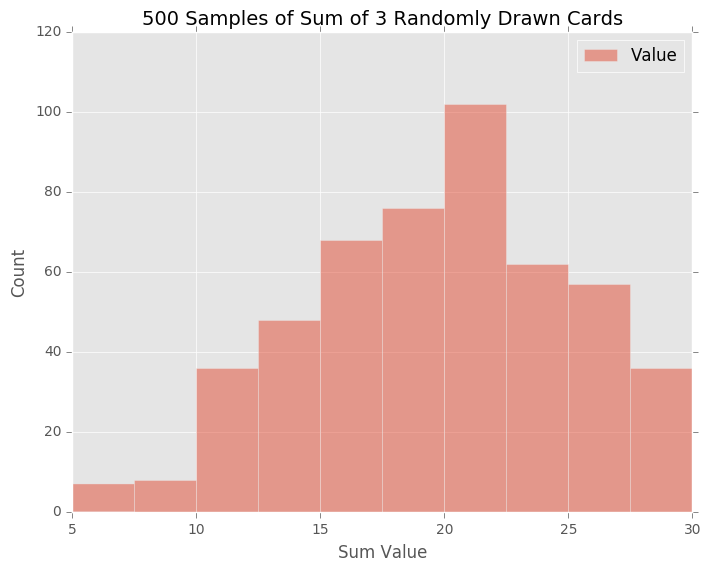

Supervised Learning - Decision Tree
A decision tree is a decision support tool that uses a tree-like graph or model of decisions and their possible consequences, including chance event outcomes, resource costs, and utility. It is one way to display an algorithm.
Decision trees are commonly used in operations research, specifically in decision analysis, to help identify a strategy most likely to reach a goal, but are also a popular tool in machine learning.
Overview
A decision tree is a flowchart-like structure in which each internal node represents a "test" on an attribute (e.g. whether a coin flip comes up heads or tails), each branch represents the outcome of the test, and each leaf node represents a class label (decision taken after computing all attributes). The paths from root to leaf represent classification rules.
In decision analysis, a decision tree and the closely related influence diagram are used as a visual and analytical decision support tool, where the expected values (or expected utility) of competing alternatives are calculated.
A decision tree consists of three types of nodes:
Decision nodes – typically represented by squares Chance nodes – typically represented by circles End nodes – typically represented by triangles Decision trees are commonly used in operations research and operations management. If, in practice, decisions have to be taken online with no recall under incomplete knowledge, a decision tree should be paralleled by a probability model as a best choice model or online selection model algorithm. Another use of decision trees is as a descriptive means for calculating conditional probabilities.
Decision trees, influence diagrams, utility functions, and other decision analysis tools and methods are taught to undergraduate students in schools of business, health economics, and public health, and are examples of operations research or management science methods.
Data Impurity and Entropy
A decision tree is built top-down from a root node and involves partitioning the data into subsets that contain instances with similar values (homogenous). ID3 algorithm uses entropy to calculate the homogeneity of a sample. If the sample is completely homogeneous the entropy is zero and if the sample is an equally divided it has entropy of one. \begin{aligned} p &= 0.5\\ \therefore\; q &= 1 - p\\ &= 0.5\\ \end{aligned}
\begin{aligned} Entropy &= -p\,log_2p -q\,log_2q\\ &= -0.5\,log_20.5 -0.5\,log_20.5\\ &= 1\\ \end{aligned}
To build a decision tree, we need to calculate two types of entropy using frequency tables as follows:
a) Entropy using the frequency table of one attribute:
\[
E(S) = - \sum_{i=1}^c\;p_i\,log_2(p_i)
\]
b) Entropy using the frequency table of two attributes:
\[
E(T,X) = - \sum_{c\in X}\;P(c)\,E(c)
\]
Information Gain
The information gain is based on the decrease in entropy after a dataset is split on an attribute. Constructing a decision tree is all about finding attribute that returns the highest information gain (i.e., the most homogeneous branches).
Step 1: Calculate entropy of the target.
Step 2: The dataset is then split on the different attributes. The entropy for each branch is calculated. Then it is added proportionally, to get total entropy for the split. The resulting entropy is subtracted from the entropy before the split. The result is the Information Gain, or decrease in entropy.
\begin{aligned}
Gain(T, X) &= Entropy(T) - Entropy(T,X)\\
&= E(T) - E(T,X)
\end{aligned}
Step 3: Choose attribute with the largest information gain as the decision node, divide the dataset by its branches and repeat the same process on every branch.
Step 4a: A branch with entropy of 0 is a leaf node.
Step 4b: A branch with entropy more than 0 needs further splitting.
Step 5: The ID3 algorithm is run recursively on the non-leaf branches, until all data is classified.
Decision Tree Strengths and Weaknesses
Strengths
- Easy to use,
- Beautiful to draw/grow
- Graphically describes the data
- Bigger, custom classifiers can be built out of decision tree via ensemble methods.
Weaknesses
- Prone to overfitting, esp too many features
-
Needs to pay attention to tuning parameters, stop the growth of the tree (by tuning min samples split) at the appropriate time
Other useful references:
Supervised Learning - Support Vector Machine (SVM)
Support Vector Machine (SVM)
In machine learning, support vector machines (SVMs, also support vector networks) are supervised learning models with associated learning algorithms that analyze data used for classification and regression analysis. Given a set of training examples, each marked as belonging to one or the other of two categories, an SVM training algorithm builds a model that assigns new examples to one category or the other, making it a non-probabilistic binary linear classifier. An SVM model is a representation of the examples as points in space, mapped so that the examples of the separate categories are divided by a clear gap that is as wide as possible. New examples are then mapped into that same space and predicted to belong to a category based on which side of the gap they fall.
In addition to performing linear classification, SVMs can efficiently perform a non-linear classification using what is called the kernel trick, implicitly mapping their inputs into high-dimensional feature spaces.
When data are not labeled, supervised learning is not possible, and an unsupervised learning approach is required, which attempts to find natural clustering of the data to groups, and then map new data to these formed groups. The clustering algorithm which provides an improvement to the support vector machines is called support vector clustering and is often[citation needed] used in industrial applications either when data are not labeled or when only some data are labeled as a preprocessing for a classification pass.
Motivation
Classifying data is a common task in machine learning. Suppose some given data points each belong to one of two classes, and the goal is to decide which class a new data point will be in. In the case of support vector machines, a data point is viewed as a \( p \)-dimensional vector (a list of \( p \) numbers), and we want to know whether we can separate such points with a \( (p-1) \)-dimensional hyperplane. This is called a linear classifier. There are many hyperplanes that might classify the data. One reasonable choice as the best hyperplane is the one that represents the largest separation, or margin, between the two classes. So we choose the hyperplane so that the distance from it to the nearest data point on each side is maximized. If such a hyperplane exists, it is known as the maximum-margin hyperplane and the linear classifier it defines is known as a maximum margin classifier; or equivalently, the perceptron of optimal stability.
Definition
More formally, a support vector machine constructs a hyperplane or set of hyperplanes in a high- or infinite-dimensional space, which can be used for classification, regression, or other tasks. Intuitively, a good separation is achieved by the hyperplane that has the largest distance to the nearest training-data point of any class (so-called functional margin), since in general the larger the margin the lower the generalization error of the classifier.
Whereas the original problem may be stated in a finite dimensional space, it often happens that the sets to discriminate are not linearly separable in that space. For this reason, it was proposed that the original finite-dimensional space be mapped into a much higher-dimensional space, presumably making the separation easier in that space. To keep the computational load reasonable, the mappings used by SVM schemes are designed to ensure that dot products may be computed easily in terms of the variables in the original space, by defining them in terms of a kernel function \( k(x,y) \) k(x,y) selected to suit the problem.
Applications
SVMs can be used to solve various real world problems:
- SVMs are helpful in text and hypertext categorization as their application can significantly reduce the need for labeled training instances in both the standard inductive and transductive settings.
- Classification of images can also be performed using SVMs. Experimental results show that SVMs achieve significantly higher search accuracy than traditional query refinement schemes after just three to four rounds of relevance feedback. This is also true of image segmentation systems, including those using a modified version SVM that uses the privileged approach as suggested by Vapnik.
- Hand-written characters can be recognized using SVM.
- The SVM algorithm has been widely applied in the biological and other sciences. They have been used to classify proteins with up to 90% of the compounds classified correctly. Permutation tests based on SVM weights have been suggested as a mechanism for interpretation of SVM models. Support vector machine weights have also been used to interpret SVM models in the past. Posthoc interpretation of support vector machine models in order to identify features used by the model to make predictions is a relatively new area of research with special significance in the biological sciences.
History
The original SVM algorithm was invented by Vladimir N. Vapnik and Alexey Ya. Chervonenkis in 1963. In 1992, Bernhard E. Boser, Isabelle M. Guyon and Vladimir N. Vapnik suggested a way to create nonlinear classifiers by applying the kernel trick to maximum-margin hyperplanes. The current standard incarnation (soft margin) was proposed by Corinna Cortes and Vapnik in 1993 and published in 1995.
Other Useful Resources
Supervised Learning - Naive Bayes
Naive Bayes Classifier / Algorithm
In machine learning, naive Bayes classifiers are a family of simple probabilistic classifiers based on applying Bayes' theorem with strong (naive) independence assumptions between the features.
Naive Bayes has been studied extensively since the 1950s. It was introduced under a different name into the text retrieval community in the early 1960s, and remains a popular (baseline) method for text categorization, the problem of judging documents as belonging to one category or the other (such as spam or legitimate, sports or politics, etc.) with word frequencies as the features. With appropriate pre-processing, it is competitive in this domain with more advanced methods including support vector machines. It also finds application in automatic medical diagnosis.
Naive Bayes classifiers are highly scalable, requiring a number of parameters linear in the number of variables (features/predictors) in a learning problem. Maximum-likelihood training can be done by evaluating a closed-form expression,[1]:718 which takes linear time, rather than by expensive iterative approximation as used for many other types of classifiers.
In the statistics and computer science literature, Naive Bayes models are known under a variety of names, including simple Bayes and independence Bayes. All these names reference the use of Bayes' theorem in the classifier's decision rule, but naive Bayes is not (necessarily) a Bayesian method.
Despite their naive design and apparently oversimplified assumptions, naive Bayes classifiers have worked quite well in many complex real-world situations. In 2004, an analysis of the Bayesian classification problem showed that there are sound theoretical reasons for the apparently implausible efficacy of naive Bayes classifiers. Still, a comprehensive comparison with other classification algorithms in 2006 showed that Bayes classification is outperformed by other approaches, such as boosted trees or random forests.
An advantage of naive Bayes is that it only requires a small number of training data to estimate the parameters necessary for classification.
Bayes Rules:
Prior Probability * Test Evidence (in Probability) = Posterior Probability
Cancer Example:
Prior Probabilities {Prior Cancer Probability is 1%}:
\begin{aligned}
P(C) &= 0.01\\
\therefore\; P(NC) &= 1 - P(C)\\
&= 0.99
\end{aligned}
Test Evidence, Sensitivity and Specificity Probabilities:
Test Sensitivity
\begin{aligned}
P(Pos|C) &= 0.9\\
\therefore\; P(Neg|C) &= 1 - 0.9\\
&= 0.1
\end{aligned}
Test specificity
\begin{aligned}
P(Neg|NC) &= 0.9\\
\therefore\; P(Pos|NC) &= 1 - 0.9\\
&= 0.1
\end{aligned}
Joint Probability:
\begin{aligned}
P(C, Pos) &= P(C) * P(Pos|C)\\
&= 0.009\\\\
P(NC, Pos) &= P(NC) * P(Pos|NC)\\
&= 0.099\\\\
P(Pos) &= P(C|Pos) + P(NC|Pos)\\
&= 0.009 + 0.099 \\
&= 0.108
\end{aligned}
Normalized Posterior Probability: \begin{aligned} P(C|Pos) &= P(C, Pos) / P(Pos)\\ &= 0.009 / 0.108\\ &= 0.0833 \\\\ P(NC|Pos) &= P(NC, Pos) / P(Pos)\\ &= 0.099 / 0.108\\ &= 0.9167 \end{aligned}
Legends:
- \(P(C)\): Prior Cancer Probability, in this case 1%
- \(P(NC)\): Prior non-Cancer Probability, 1-P(C), in this case 99%
- \(P(C, Pos)\): Joint probability that one having cancer AND tested positive
- \(P(NC, Pos)\): Joint probability that one does not have cancer AND tested positive
- \(P(C|Pos)\): Posterior probability of having cancer given one is tested positive
- \(P(NC|Pos)\): Posterior probability of NOT having cancer given one is tested positive
- \(P(Pos|C)\): Test sensitivity, Probability of tested positive if one has cancer
- \(P(Neg|NC)\): Test specificity, Probability of tested negative if one has NO cancer.
Common Usage
Naive Bayes is a pretty good algorithm for text learning. Naive Bayes is called "Naive" because it works with words at various length, but ignores word order.
Pros:
- Easy to implement
- Simple and efficient to run
- Big / Great feature spaces
Cons:
- It could break when phrases that encompasses multiple words that have distinctive meanings don't really work well. For example Chicago Bulls will be interpreted as "Chicago" and "Bulls", but that's not what Chicago Bulls is.
Other references:
Supervised Learning - Introduction
Supervised Learning and Classifications
Supervised learning is the machine learning task of inferring a function from labeled training data. The training data consist of a set of training examples. In supervised learning, each example is a pair consisting of an input object (typically a vector) and a desired output value (also called the supervisory signal). A supervised learning algorithm analyzes the training data and produces an inferred function, which can be used for mapping new examples. An optimal scenario will allow for the algorithm to correctly determine the class labels for unseen instances. This requires the learning algorithm to generalize from the training data to unseen situations in a "reasonable" way (see inductive bias).
The parallel task in human and animal psychology is often referred to as concept learning.
Overview
In order to solve a given problem of supervised learning, one has to perform the following steps:
- Determine the type of training examples. Before doing anything else, the user should decide what kind of data is to be used as a training set. In the case of handwriting analysis, for example, this might be a single handwritten character, an entire handwritten word, or an entire line of handwriting.
- Gather a training set. The training set needs to be representative of the real-world use of the function. Thus, a set of input objects is gathered and corresponding outputs are also gathered, either from human experts or from measurements.
- Determine the input feature representation of the learned function. The accuracy of the learned function depends strongly on how the input object is represented. Typically, the input object is transformed into a feature vector, which contains a number of features that are descriptive of the object. The number of features should not be too large, because of the curse of dimensionality; but should contain enough information to accurately predict the output.
- Determine the structure of the learned function and corresponding learning algorithm. For example, the engineer may choose to use support vector machines or decision trees.
- Complete the design. Run the learning algorithm on the gathered training set. Some supervised learning algorithms require the user to determine certain control parameters. These parameters may be adjusted by optimizing performance on a subset (called a validation set) of the training set, or via cross-validation.
- Evaluate the accuracy of the learned function. After parameter adjustment and learning, the performance of the resulting function should be measured on a test set that is separate from the training set.
- A wide range of supervised learning algorithms are available, each with its strengths and weaknesses. There is no single learning algorithm that works best on all supervised learning problems (see the No free lunch theorem).
There are four major issues to consider in supervised learning:
Bias-variance tradeoff
Main article: Bias-variance dilemma
A first issue is the tradeoff between bias and variance. Imagine that we have available several different, but equally good, training data sets. A learning algorithm is biased for a particular input \( x \) if, when trained on each of these data sets, it is systematically incorrect when predicting the correct output for \( x \) . A learning algorithm has high variance for a particular input \( x \) if it predicts different output values when trained on different training sets. The prediction error of a learned classifier is related to the sum of the bias and the variance of the learning algorithm. Generally, there is a tradeoff between bias and variance. A learning algorithm with low bias must be "flexible" so that it can fit the data well. But if the learning algorithm is too flexible, it will fit each training data set differently, and hence have high variance. A key aspect of many supervised learning methods is that they are able to adjust this tradeoff between bias and variance (either automatically or by providing a bias/variance parameter that the user can adjust).
Function complexity and amount of training data
The second issue is the amount of training data available relative to the complexity of the "true" function (classifier or regression function). If the true function is simple, then an "inflexible" learning algorithm with high bias and low variance will be able to learn it from a small amount of data. But if the true function is highly complex (e.g., because it involves complex interactions among many different input features and behaves differently in different parts of the input space), then the function will only be learnable from a very large amount of training data and using a "flexible" learning algorithm with low bias and high variance.
Dimensionality of the input space
A third issue is the dimensionality of the input space. If the input feature vectors have very high dimension, the learning problem can be difficult even if the true function only depends on a small number of those features. This is because the many "extra" dimensions can confuse the learning algorithm and cause it to have high variance. Hence, high input dimensionality typically requires tuning the classifier to have low variance and high bias. In practice, if the engineer can manually remove irrelevant features from the input data, this is likely to improve the accuracy of the learned function. In addition, there are many algorithms for feature selection that seek to identify the relevant features and discard the irrelevant ones. This is an instance of the more general strategy of dimensionality reduction, which seeks to map the input data into a lower-dimensional space prior to running the supervised learning algorithm.
Noise in the output values
A fourth issue is the degree of noise in the desired output values (the supervisory target variables). If the desired output values are often incorrect (because of human error or sensor errors), then the learning algorithm should not attempt to find a function that exactly matches the training examples. Attempting to fit the data too carefully leads to overfitting. You can overfit even when there are no measurement errors (stochastic noise) if the function you are trying to learn is too complex for your learning model. In such a situation that part of the target function that cannot be modeled "corrupts" your training data - this phenomenon has been called deterministic noise. When either type of noise is present, it is better to go with a higher bias, lower variance estimator.
In practice, there are several approaches to alleviate noise in the output values such as early stopping to prevent overfitting as well as detecting and removing the noisy training examples prior to training the supervised learning algorithm. There are several algorithms that identify noisy training examples and removing the suspected noisy training examples prior to training has decreased generalization error with statistical significance.
Other factors to consider (important)
Other factors to consider when choosing and applying a learning algorithm include the following:
- Heterogeneity of the data. If the feature vectors include features of many different kinds (discrete, discrete ordered, counts, continuous values), some algorithms are easier to apply than others. Many algorithms, including Support Vector Machines, linear regression, logistic regression, neural networks, and nearest neighbor methods, require that the input features be numerical and scaled to similar ranges (e.g., to the [-1,1] interval). Methods that employ a distance function, such as nearest neighbor methods and support vector machines with Gaussian kernels, are particularly sensitive to this. An advantage of decision trees is that they easily handle heterogeneous data.
- Redundancy in the data. If the input features contain redundant information (e.g., highly correlated features), some learning algorithms (e.g., linear regression, logistic regression, and distance based methods) will perform poorly because of numerical instabilities. These problems can often be solved by imposing some form of regularization.
- Presence of interactions and non-linearities. If each of the features makes an independent contribution to the output, then algorithms based on linear functions (e.g., linear regression, logistic regression, Support Vector Machines, naive Bayes) and distance functions (e.g., nearest neighbor methods, support vector machines with Gaussian kernels) generally perform well. However, if there are complex interactions among features, then algorithms such as decision trees and neural networks work better, because they are specifically designed to discover these interactions. Linear methods can also be applied, but the engineer must manually specify the interactions when using them.
- When considering a new application, the engineer can compare multiple learning algorithms and experimentally determine which one works best on the problem at hand (see cross validation). Tuning the performance of a learning algorithm can be very time-consuming. Given fixed resources, it is often better to spend more time collecting additional training data and more informative features than it is to spend extra time tuning the learning algorithms.
The most widely used learning algorithms are Support Vector Machines, linear regression, logistic regression, naive Bayes, linear discriminant analysis, decision trees, k-nearest neighbor algorithm, and Neural Networks (Multilayer perceptron).
In Machine learning, it is very important to train and test two different sets of data. If we don't do that we could overfit the data. We could think we know better what is actually going on than we actually know.
Usually when we get a dataset, we use 90% of the data as training data, and save 10% as testing data. When we do reporting, we use the results from the test data, as it more closely resemble real life application / tests on the algorithm.
Overfitting and Underfitting
In statistics and machine learning, one of the most common tasks is to fit a "model" to a set of training data, so as to be able to make reliable predictions on general untrained data.
In overfitting, a statistical model describes random error or noise instead of the underlying relationship. Overfitting occurs when a model is excessively complex, such as having too many parameters relative to the number of observations. A model that has been overfit has poor predictive performance, as it overreacts to minor fluctuations in the training data.
Underfitting occurs when a statistical model or machine learning algorithm cannot capture the underlying trend of the data. Underfitting would occur, for example, when fitting a linear model to non-linear data. Such a model would have poor predictive performance.
The possibility of overfitting exists because the criterion used for training the model is not the same as the criterion used to judge the efficacy of a model. In particular, a model is typically trained by maximizing its performance on some set of training data. However, its efficacy is determined not by its performance on the training data but by its ability to perform well on unseen data. Overfitting occurs when a model begins to "memorize" training data rather than "learning" to generalize from trend. As an extreme example, if the number of parameters is the same as or greater than the number of observations, a simple model or learning process can perfectly predict the training data simply by memorizing the training data in its entirety, but such a model will typically fail drastically when making predictions about new or unseen data, since the simple model has not learned to generalize at all.
The potential for overfitting depends not only on the number of parameters and data but also the conformability of the model structure with the data shape, and the magnitude of model error compared to the expected level of noise or error in the data.
Even when the fitted model does not have an excessive number of parameters, it is to be expected that the fitted relationship will appear to perform less well on a new data set than on the data set used for fitting. In particular, the value of the coefficient of determination will shrink relative to the original training data.
In order to avoid overfitting, it is necessary to use additional techniques (e.g. cross-validation, regularization, early stopping, pruning, Bayesian priors on parameters or model comparison), that can indicate when further training is not resulting in better generalization. The basis of some techniques is either (1) to explicitly penalize overly complex models, or (2) to test the model's ability to generalize by evaluating its performance on a set of data not used for training, which is assumed to approximate the typical unseen data that a model will encounter.
A good analogy for the overfitting problem is imagine a baby trying to learn what is a window or what is not a window, we start to show him windows and he detects at an initial phase that all windows have glasses, and a frame and you can look outside, some of them may be opened. If we keep showing the same windows the baby may also falsely deduce that all windows are green, and that all green frames are windows. Thus overfitting the problem.
Descriptive Statistics Final Project - Random Draws of Card Deck
Instead of working on this project on a google sheet files, I decided to write my own python script to simulate the experiments.
1) Histogram generated shown as below.

Histogram for original card values are negatively skewed (towards right).
2) Randomly Drawing 3 Cards
I wrote python scripts with pandas and matplotlib for the rest of the project.
3) Distribution of Sum of 3 Randomly Drawn Cards
30 Samples of Sum of 3 Randomly Drawn Cards 
Statistical Description of this sample with n = 30:
count 30.000000
mean 19.866667
std 5.550603
min 9.000000
25% 15.000000
50% 20.000000
75% 24.000000
max 30.000000
500 Samples of Sum of 3 Randomly Drawn Cards

Statistical Description of this sample with n = 500:
count 500.000000
mean 19.542000
std 5.337529
min 5.000000
25% 16.000000
50% 20.000000
75% 24.000000
max 30.000000
4) As sample size increases, the curve gets more normalized (bell-shaped).
5) Q: Within what range will you expect approximately 90% of your draw values to fall? What is the approximate probability that you will get a draw value of at least 20? Make sure you justify how you obtained your values.
To determine the range where 90% of the values fall, I found the closest corresponding z-value to be 1.28. Therefore, with the following formula, I determined the range for our sample with 30 draws, and sample with 500 draws.
\[
z = \frac{ x - \mu }{\sigma} \\
x_{30, 90%} = 26.971442 \\
x_{500, 90%} = 26.374 \\
\]
To draw at least 20 from each of the samples, the corresponding z values are:
\[ z_{30, >20} = \frac{20 - 19.866667}{5.550603} = 0.024021 \\ z_{500, >20} = \frac{20 - 19.542000}{5.337529} = 0.085807 \\ \]
For sample with sample size 30, at z = 0.024021, the probability is 0.51 (51%). That means the change of drawing 3 cards with sum greater than 20 from this sample is 49%.
For sample with sample size 500, at z = 0.024021, the probability is 0.534 (53.4%). That means the change of drawing 3 cards with sum greater than 20 from this sample is 46.6%.
Finally, here's a link to the z-table for reference.
Inferential Statistics - Chi-Squared Tests
Types of Data
- Ordinal Data - ranks with no fixed intervals nor zeros
- Interval Data - ranks with equal intervals
- Ratio Data - ranks with equal intervals and an absolute zero
- Nominal/Categorical Data - data with no numerical values (typically yes/no, in/out, successful/unsuccessful)
Types of Tests
- Parametric - hypothesis testing that make assumptions about the parameters of the populations, \( \mu \) and \( \sigma \).
- Non-Parametric - hypothesis testing that do not require population parameters
Characteristics of Non-Parametric Testings
- There is no way to calculate a mean or standard deviation
- The data is based on frequencies or proportions
- The data is nominal (successful vs unsuccessful, 1 or 0, yes or no, mountain vs beach etc.)
- The data are not based on Normal distribution
\( \chi^2 \) Goodness of Fit Test
How well our observed frequencies 'fit' our expected frequencies?
\[
\chi ^2 = \sum{ \frac{(f_0 - f_e)^2}{f_e} }
\]
\( \chi^2 \) is smaller when the observed value is closer to the expected value.
\( \chi^2 \) is NEVER negative and therefore \( \chi^2 \) statistic is one-directional.
For each category, we have one \( \chi^2 \) statistics. When we have more categories, \( \chi^2 \) statistics get bigger with the number of categories.
Degrees of Freedom
For n x m, 2 dimensional nominal data: \[ df = (N_n - 1) * (N_m - 1) \\ \text{where } N_n \text{ and }N_m \text{ are number of columns, and number of rows respectively. } \]
Cramer's V \( (\phi_c) \)
\[ \phi_c = \sqrt{\frac{\chi^2}{n(k-1)}} \\ k \text{ is the smaller number between number of rows or number of columns}\\ n \text{ is the total sample size regardless of treatments} \]
Assumptions and Restrictions for \(\chi^2\) Tests
- Avoid dependent observations. Independence will be violated if any participants were given two treatments instead of one.
- Avoid small expected frequencies, therefore in general have a larger number of participants. Sample size should be at least 20, and each expected cell frequencies should be at least 5.
Inferential Statistics - Regressions
Linear Regressions
Line of best fit forms a line to help us:
- describe data
- make predictions
Observed Y vs Expected Y
Expected Y \( \hat{y} \) are the ones calculated/predicted based on the best fit regression line.
Observed Y \( y \) are collected data or real-life data.
Residual is the difference between Observed value and Expected value.
A few ways to find the line of best fit:
- Find a line to minimize the sum of residuals. The problem with this approach is sometimes, negative and positive residuals cancel each other out.
- Find a line that minimize the sum of absolute residuals.
- Find a line that minimize the sum of squared residuals, \( \sum{(y - \hat{y})} \)
When we use calculus to determine the slope, b:
\[
b = \frac{\sum{(y_i - \bar{y})(x_i - \bar{x})}}{\sum{(x_i - \bar{x})^2}} \\
= r (\frac{S_y}{S_x}) \\
\text{where } r \text{ is Pearson's Correlation Coefficient and }\\
S \text{ are standard deviations of } x \text{ and } y.
\]
We have decided to symbolize the regression line by y = bx + a, where b represents the slope and a represents the y-intercept.
Since \( b = r(\frac{S_y}{S_x}) \), we can also symbolize the regression line like this:
\[ y = r(\frac{S_y}{S_x})x + a \]
Pearson's Correlation Coefficient \( r \)
A high \(r\) value indicates a strong correlation. This could contribute to high \(r^2 \) value, which indicates the percentage of differences in Y is due to differences in X.
Standard Error of Estimates
Standard error of estimates:
\[
SE = \sqrt{ \frac{\sum (y - \hat{y})^2}{N-2}}
\]
Factors that Affect the Regressions
- outliers affect the value of r, correlation Coefficient
- outliers also affect the linear regression line
-
Inferential Statistics - Correlations
Relationships
How one variable is related to the other?
Variable X and Y
X is often referred to as the predictor, explanatory, independent variable.
Y is often referred as the outcome, response, dependent variable.
Scatterplot is a popular/ most common way to show relationship of X and Y variables.
Strong Relationships
Strong relationships usually have less scattered plots. If we draw an eclipse surrounding the data points, the smaller the ratio of minor axis to the major axis, the stronger the relationship is.
Direction of Relationships
Positively related - Y responses in the same direction as X changes; Negatively related - Y responses in opposite directions of X changes.
Correlation Coefficient, (r)
Also known as Pierson's r.
r is a fraction, with the covariance of x and y (how much do they vary together) as the numerator, and the product of standard deviation of x and standard deviation of y as the denominator.
\[
r = \frac{cov(x,y)}{ S_x * S_y } = \frac{cov_{x,y}}{ S_x * S_y }
\]
r measures the strength of a relationship, by measuring how closely the data falls along a straight line.
Even though r is a ratio, it is not interpreted as a percentage. However, \(r^2\) is a percentage of the variation in y explained by variation in x. \(r^2\) is called the coefficient determination.
True Correlation of Population, rho, \( \rho \)
We usually perform hypothesis testing with t-tests.
\[
H_{0} : \rho = 0 \\
H_{1} : \rho \gt 0 \\
H_{1} : \rho \lt 0 \\
H_{1} : \rho \ne 0
\]
Causation vs Correlations
Causation - One variable caused another to happen.
Correlation - There is a relationship between two variables. But there are lots of lurking variables. For example, there are two variables X and Y. They could have a relationship because both of them are influenced by variable A, or Y is influenced by X through variable A. In this case, variable A is called the mediating variable.
To make a causal statement:
- the independent variable would have to occur BEFORE the dependent variable.
- have to rule out other lurking variables too
Fallacies
Ambiguous Temporal Precedence - we don't know which variable happens first.
Third variable problem
Post-hoc fallacy
t value and Correlation Coefficient, (r)
t value and r:
\[
t = \frac{r \sqrt{N-2}}{\sqrt{1-r^2}}
\]
where \(df\) is \( N - 2 \)
Inferential Statistics - ANOVA Continued.
One of the popular Multiple Comparison Tests is Tukey's Honestly Significant Differences.
Tukey's Honestly Significant Differences (HSD)
Tukey's HSD is calculated as the following:
\[
\text{Tukey's HSD} = q * \sqrt{\frac{MS_{within}}{n}} \\
q \text{ is looked up with } df_{within} \text{ and } k \text{, the number of treatments/sample groups} \\
n \text{ is the number of samples in one sample group}
\]
If the mean difference between/among treatments are greater than Tukey's HSD, the difference is significant.
Note this is very similar to Z test and T test. For Z tests, the margin of error is: \[ \text{Margin of Error} = z * \frac{\sigma}{\sqrt{n}} \]
Whereas for t tests, the margin of error is: \[ \text{Margin of Error} = t * \frac{s}{\sqrt{n}} \]
Cohen's D for Multiple Comparisons
For normal comparisons, Cohen's D is calculated by
\[
\text{Cohen's D, } d = \frac{\bar{X_1} - \bar{X_2}}{SD_{pooled}}
\]
In multiple comparisons, Cohen's D is calculated by \[ \text{Cohen's D, } d = \frac{\bar{X_1} - \bar{X_2}}{\sqrt{MS_{within}}} \]
Cohen's D is calculated per pair comparisons.
\( \mathbf{\eta ^ 2} \)
\( \eta ^2 \) is defined as the proportion of total variance that is due to between-group differences (explained variation).
\[ \eta ^2 = \frac{SS_{between}}{SS_{total}} \\ = \frac{SS_{between}}{SS_{between} + SS_{within}} \]
Reporting Reports of Anova
We report the results of F Statistics as the following:
\[
F(df_{between}, df_{within}) = 27 \quad p < 0.05 \quad \eta ^2 = 0.90 \quad \\
\text{p is estimated, by hand} \\
F(df_{between}, df_{within}) = 27 \quad p = 0.001 \quad \eta ^2 = 0.90 \quad \\
\text{exact p value calculated by software} \\
\]
ANOVA for Groups with Different Sample Sizes
Grand mean
\[
\text{Grand mean, } \bar{X_G} = \frac{ \sum_{j=0}^k n_j (\bar{x_j}) }{\sum_{j=0}^k n_j } \\
n_j \text{ is sample size for each sample} \\
k \text{ is number of sample groups} \\
\]
SS (Sum of Squares) Between
\[
\text{sum of squares, } SS_{between} = \sum_{j=0}^k n_j (\bar{x_j} - \bar{x_G})^2 \\
n_j \text{ is sample size for each sample} \\
\]
SS (Sum of Squares) Within
\[
\text{sum of squares, } SS_{within} = \sum_{i=0}^N (x_i - \bar{x_k})^2 \\
k \text{ is number of sample groups} \\
N \text{ is total number of all samples of each sample group} \\
\]
DF (Degress of Freedom) Between
\[
\text{degrees of freedom, } df_{between} = k - 1 \\
k \text{ is number of sample groups} \\
\]
DF (Degress of Freedom) Within
\[
\text{degrees of freedom, } df_{within} = N - k \\
k \text{ is number of sample groups} \\
N \text{ is total number of all samples of each sample group} \\
\]
MS (Mean Squares) Between
\[
\text{Mean square, } MS_{between} = \frac{SS_{between}}{df_{between}} \\
= \frac{\sum_{j=0}^k n_j (\bar{x_j} - \bar{x_G})^2}{k - 1}
\]
MS (Mean Squares) Within
\[
\text{Mean square, } MS_{within} = \frac{SS_{within}}{df_{within}} \\
= \frac{\sum_{i=0}^N (x_i - \bar{x_k})^2}{N - k}
\]
F Stats \[ \text{F Statistics, } F = \frac{MS_{between}}{MS_{within}} \\ = \frac{\sum_{j=0}^k n_j (\bar{x_j} - \bar{x_G})^2 / (k - 1)}{\sum_{i=0}^N (x_i - \bar{x_k})^2 / (N - k)} \]
\( \mathbf{\eta ^ 2} \)
\[
\eta ^2 = \frac{SS_{between}}{SS_{total}} \\
= \frac{SS_{between}}{SS_{between} + SS_{within}}
\]
ANOVA Power
Increase POWER in order to avoid Type II statistical error where we fail to reject the null when there is a treatment effect.
In the case of drug testing, we want to:
- test more people
- give each drug to very similar groups of people
- test with a strong dosage
ANOVA Assumptions & Conclusions
We assume:
- Normality: the population of which our samples are from are all normally distributed.
- Homogeneity of Variance: the samples come from populations that have equal amount of variability.
- Independence of Observations: The results found from one samples won't affect the others.
We could have the following exceptions:
- violate the normality if the sample is large
- violate the homogeneity of variance if:
- almost equal sample sizes
- ratio of any two variances doesn't exceed 4
-
Intro to DA - Data Analysis Process
Data Analysis Process
-
Question
Problem begins with a question you want answer or problem you wanna solve. For example:- Characters of students who pass projects
- How can I stock stores with products that most people want to buy?
-
Wrangler
- Data Acquisition
- Data Cleaning
-
Explore
- Building intuition
- Finding patterns
-
Draw Conclusions
This requires statistics and machine learning (that is beyond the scope of this course)- Draw Conclusion => Users less likely to XXX
- Make Prediction => Predict what products a user would like
-
Communicate
- Blog post, paper, email, powerpoint, in-person conversation
The steps aren't always sequential. We might go back and forth between data wrangling and exploration. Along the process, one may go back to the question to further refine the question. And data acquisition might occur before the question arises.
Data Wrangling
Data Types:
Usually data acquired are in JSON or CSV (comma separated value) format.